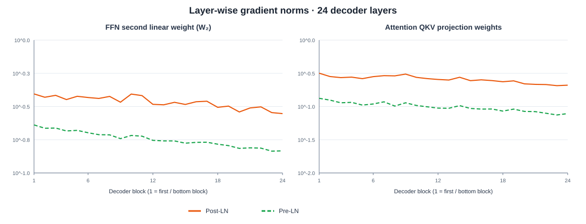
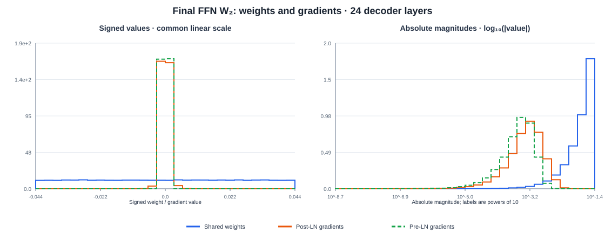
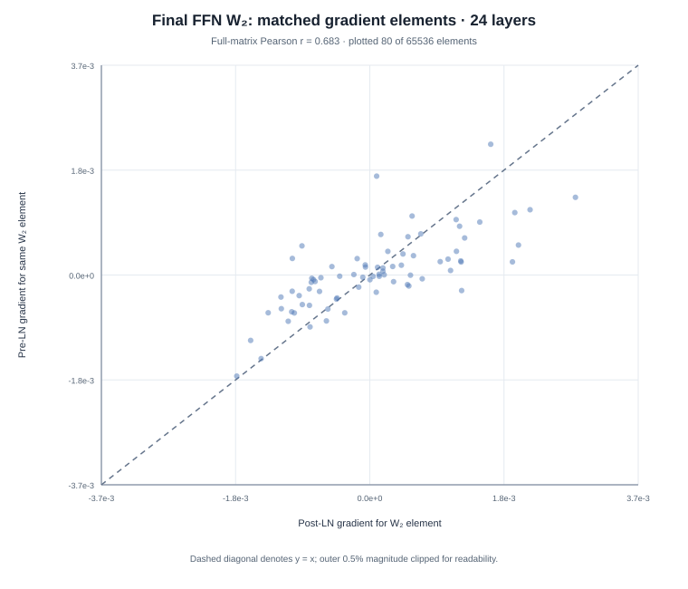
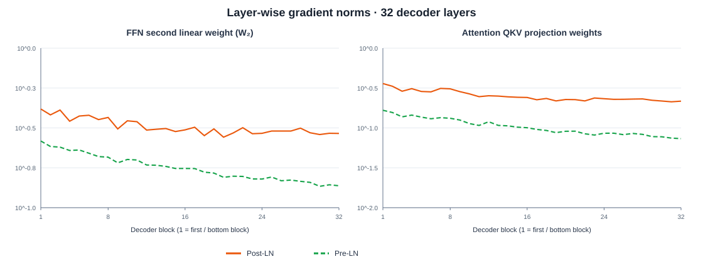
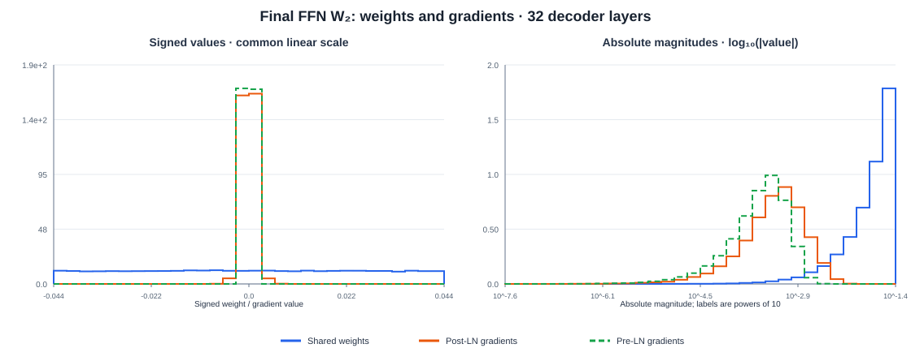
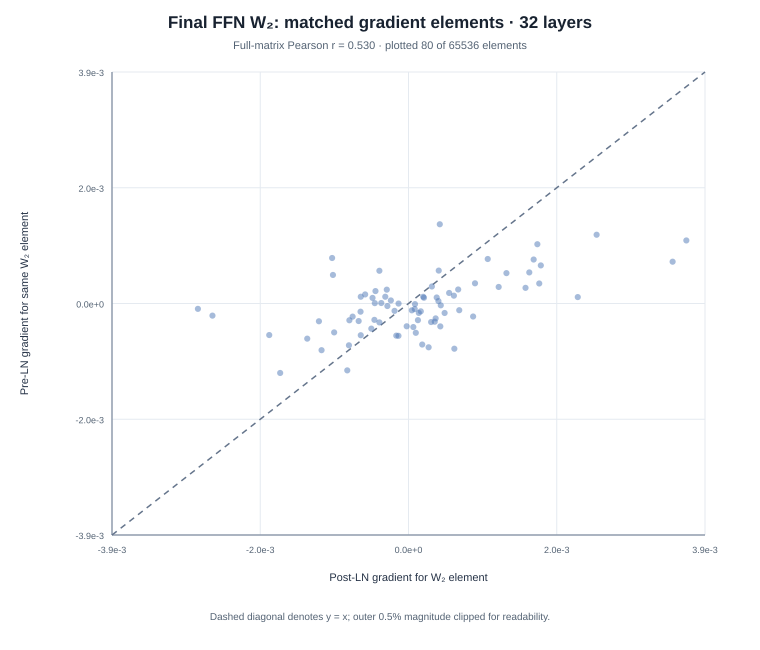
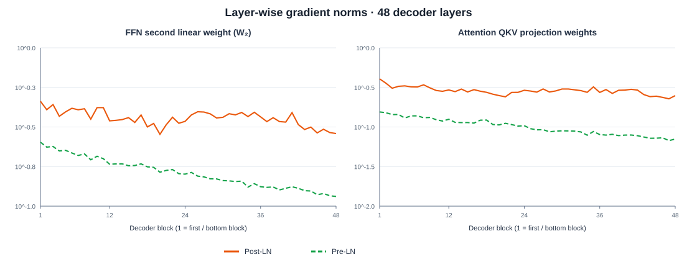
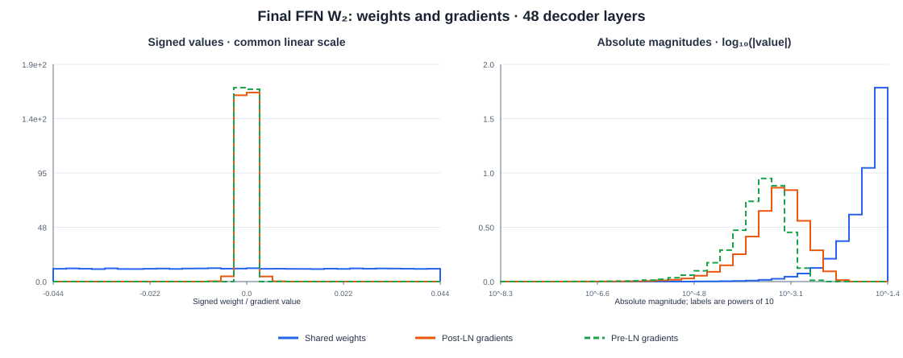
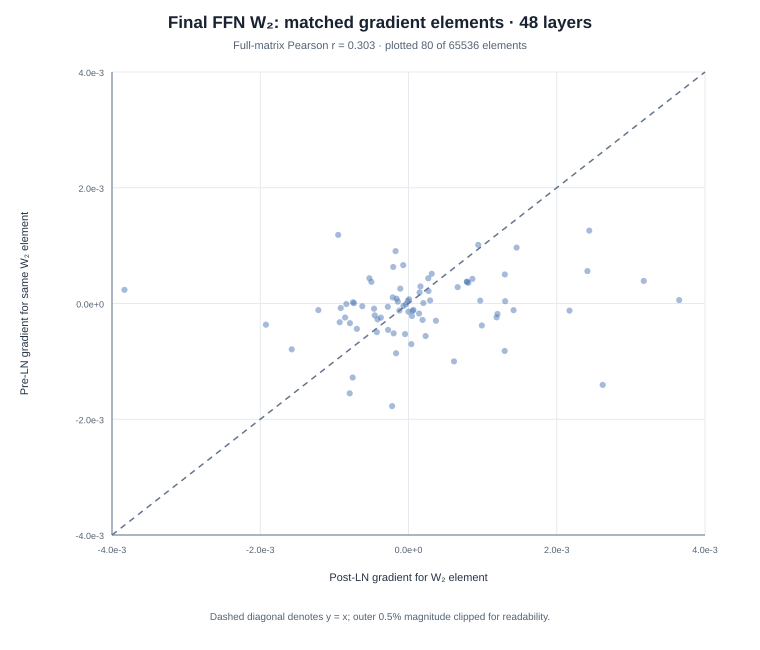

Pre-LN vs Post-LN: Motivation and Empirical Analysis of Gradient Behavior
Authors mentioned post-LN architecture requires careful tuning of initial warm steps. The gradient magnitude on higher decoder layers are very high during initial training steps, and hence the warm up steps are required.
A small causal Transformer experiment comparing layer-normalization placement at initialization. We keep shared parameter values and the training batch fixed, run one forward/backward pass, and inspect gradients at different model depths.
Observed in this run: the L2 norm of the final FFN's second weight-matrix gradient was larger for Post-LN at all three depths. The Post-LN / Pre-LN ratio was 1.91× at 24 layers, 2.13× at 32 layers, and 2.50× at 48 layers.
The scatter plot comparing gradients at different model depths, clearly shows the gradient for the post-LN case to have larger magnitude for deeper models.
01 · Definitions
Where is LayerNorm placed?
For clarity, one decoder block is written as a causal self-attention sublayer followed by an FFN sublayer. Dropout is disabled in this toy model. The FFN uses a GELU activation.
Post-LN
LayerNorm follows each residual addition. The output of each sublayer is normalized before entering the next sublayer.
The final decoder block already ends with LayerNorm, so this implementation does not add another final normalization.
Pre-LN
LayerNorm is applied inside each residual branch, before attention or the FFN. The residual stream itself bypasses that normalization.
x′ = x + Attention(LN(x)) x_next = x′ + FFN(LN(x′))
A separate final LayerNorm is applied before the vocabulary projection, as in the canonical Pre-LN setup analyzed by Xiong et al.
02 · Backpropagation intuition
Why placement changes the gradient path
Let J denote a Jacobian and gl = ∂L/∂xl. For a simplified block function F, the respective block Jacobians are:
Post-LN
x_next = LN(x + F(x)) g = (I + J_F)ᵀ J_LNᵀ g_next
The residual branch is still present, but its gradient passes through the LayerNorm Jacobian because normalization follows the addition.
Pre-LN
x_next = x + F(LN(x)) g = [I + J_LNᵀ J_Fᵀ] g_next
The identity term gives the hidden-state gradient a direct path through the residual stream, without passing through the sublayer Jacobian or its input LayerNorm.
This explains a structural difference in gradient propagation, but it does not imply that every Pre-LN parameter gradient must be smaller. Parameter gradients also depend on activations and the full network's hidden-state distribution.
03 · Experimental setup
Controlled comparison
Model
Small causal Transformer decoder with learned token and position embeddings, multi-head attention, and an FFN in each block.
Self-attention passes the same hidden-state tensor as query, key, and value input to PyTorch nn.MultiheadAttention. That module internally applies separate learned Q, K, and V projections; the three projection matrices are not tied.
Optimization step
One forward pass and one backward pass using next-token cross-entropy. No optimizer step is applied.
Controlled variables
Shared parameters are copied to exactly equal initial values; the same input tokens and targets are used for both architectures at each depth. Dropout is zero.
L2 gradient norms of the final FFN W₂ matrix and final attention QKV projection; element-wise histograms for the final FFN W₂ weights and gradients.
The additional final LayerNorm in Pre-LN is architectural, not a parameter matched to Post-LN. All parameter tensors shared by both models are initialized identically; their forward activations naturally diverge because LayerNorm is placed differently.
04 · Quantitative results
Gradient norms across model depths
The table reports absolute gradient L2 norms after the single backward pass. “Post / Pre” is the ratio of the two gradient norms for the same named parameter.
Layers
Parameter
Post-LN
Pre-LN
Post / Pre
24
Final FFN W₂
2.7965e−1
1.4670e−1
1.91×
Final attention QKV
2.0955e−1
7.8305e−2
2.68×
First FFN W₂
3.9355e−1
2.2989e−1
1.71×
32
Final FFN W₂
2.9208e−1
1.3723e−1
2.13×
Final attention QKV
2.1666e−1
7.3420e−2
2.95×
First FFN W₂
4.1565e−1
2.6185e−1
1.59×
48
Final FFN W₂
2.8745e−1
1.1513e−1
2.50×
Final attention QKV
2.4887e−1
7.0403e−2
3.53×
First FFN W₂
4.5946e−1
2.5350e−1
1.81×
What these numbers suggest: at the tested initialization, gradients for the final FFN W₂ and final attention QKV parameters are larger in Post-LN. The Post/Pre ratio for final FFN W₂ grows across these three runs. This trend is consistent with the motivation in the paper, but three depths under one seed do not establish a general scaling law.
Individual weights vs individual gradients
For the final FFN W₂, the median absolute weight was about 2.2×10⁻² at all depths, while median absolute gradients were about 5.0–5.5×10⁻⁴ for Post-LN and 2.5–3.4×10⁻⁴ for Pre-LN. Thus, gradients are not generally larger than individual weights here. The main comparison is between gradient magnitudes across architectures—not between the L2 norm of a matrix gradient and a single weight value.
05 · Plots by depth
Gradient flow and final FFN distributions
Each depth has three complementary views. Layer-wise norms show how gradient magnitudes vary through the stack; the weight/gradient histograms compare individual parameter values on common scales; and the scatter plot pairs Post-LN and Pre-LN gradients for matched elements of the final FFN W₂ matrix.
24 decoder layers
1. Layer-wise gradient norms
FFN W₂ and attention QKV projection weight gradients across decoder blocks; logarithmic y-axis.

2. Weight and gradient histograms
Final FFN W₂: signed values on a common linear scale and absolute magnitudes on a log₁₀ scale.

3. Matched element-wise gradient scatter
Each dot pairs Post-LN and Pre-LN gradients for the same final FFN W₂ element; dashed diagonal is y = x.

32 decoder layers
1. Layer-wise gradient norms
FFN W₂ and attention QKV projection weight gradients across decoder blocks; logarithmic y-axis.

2. Weight and gradient histograms
Final FFN W₂: signed values on a common linear scale and absolute magnitudes on a log₁₀ scale.

3. Matched element-wise gradient scatter
Each dot pairs Post-LN and Pre-LN gradients for the same final FFN W₂ element; dashed diagonal is y = x.

48 decoder layers
1. Layer-wise gradient norms
FFN W₂ and attention QKV projection weight gradients across decoder blocks; logarithmic y-axis.

2. Weight and gradient histograms
Final FFN W₂: signed values on a common linear scale and absolute magnitudes on a log₁₀ scale.

3. Matched element-wise gradient scatter
Each dot pairs Post-LN and Pre-LN gradients for the same final FFN W₂ element; dashed diagonal is y = x.

The scatter charts show a deterministic sample of 80 matched elements out of 65,536 for readability; Pearson correlation is calculated over the full final FFN W₂ gradient tensors. Results are from one initialization and one batch per depth, not averages over random seeds.
Takeaway
What this experiment can—and cannot—show
The controlled runs make the gradient difference visible without changing the shared initial parameter values, data, loss, or model width. In this run, Post-LN gradients for selected parameters near the output are consistently larger, with a stronger contrast for deeper models.
However, a rigorous test of depth-dependent gradient scaling needs repeated random seeds (and ideally more than one batch) at each depth, with means and variability reported. The theoretical claims in Xiong et al. come from a mean-field analysis and a broader empirical study; this small script illustrates a related phenomenon rather than reproducing the full analysis.
Reproducibility
Experiment code
The complete PyTorch script builds a causal Transformer decoder with configurable depth, copies shared parameters between Pre-LN and Post-LN models, runs the same batch through both, performs one backward pass, and saves the three plots plus compact JSON data.
The script defaults to CPU and fixed seeds for repeatability. It performs no optimizer step; it compares gradients after one backward pass. Re-running with multiple seeds is recommended before drawing statistical conclusions about depth trends.
Further reading
References and code
Xiong et al. (2020), On Layer Normalization in the Transformer Architecture, ICML / Proceedings of Machine Learning Research, 119:10524–10533. The paper analyzes gradient behavior at initialization and the role of learning-rate warm-up.